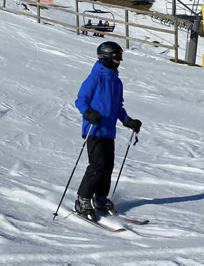

May 10, 2026
My First Blog Post
Hello! This is my very first blog post on my personal portfolio! This is my very first front-end project, which I just have started learning this year.
Here's a little bit about me. My name is Alex Lu, and at this point in time, I'm an incoming Computer Science student at the University of Waterloo. Besides coding and all things technology, I also enjoy playing softball, playing the trumpet, and skiing!
I'm currently a high school student and also a member of a robotics team, where I do programming work for the team. This season I really enjoyed working on the turret subsystem for our robot, which involved programming the motors to work together with odometry to aim and shoot balls while moving.
